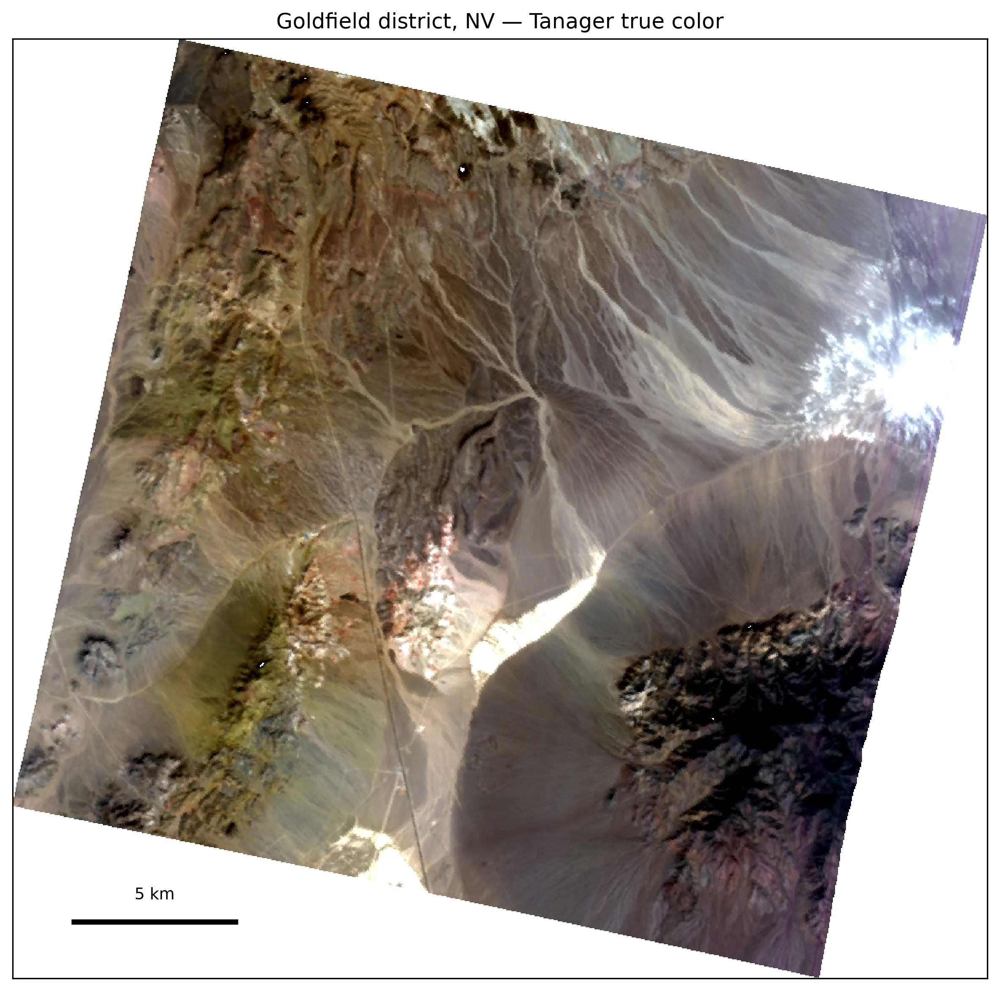
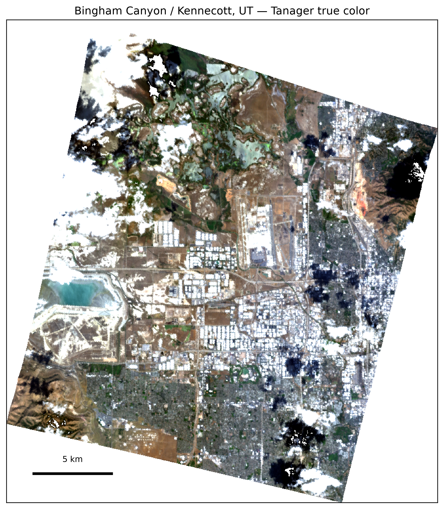
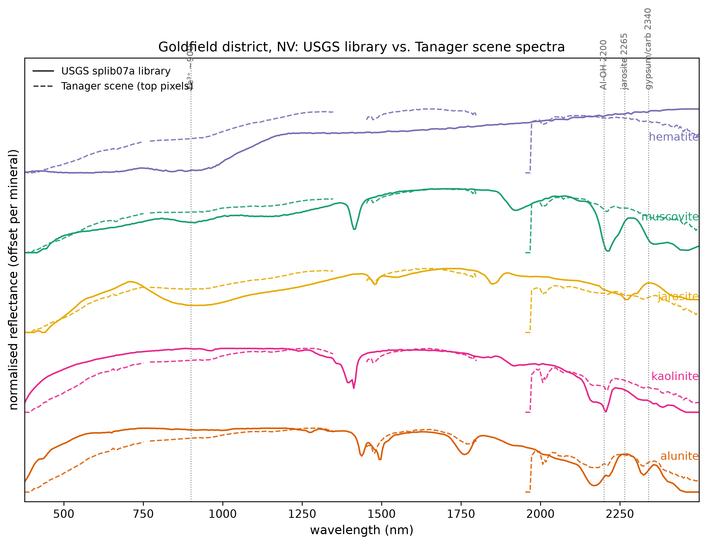
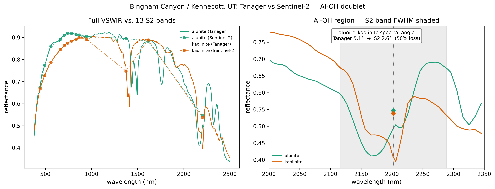
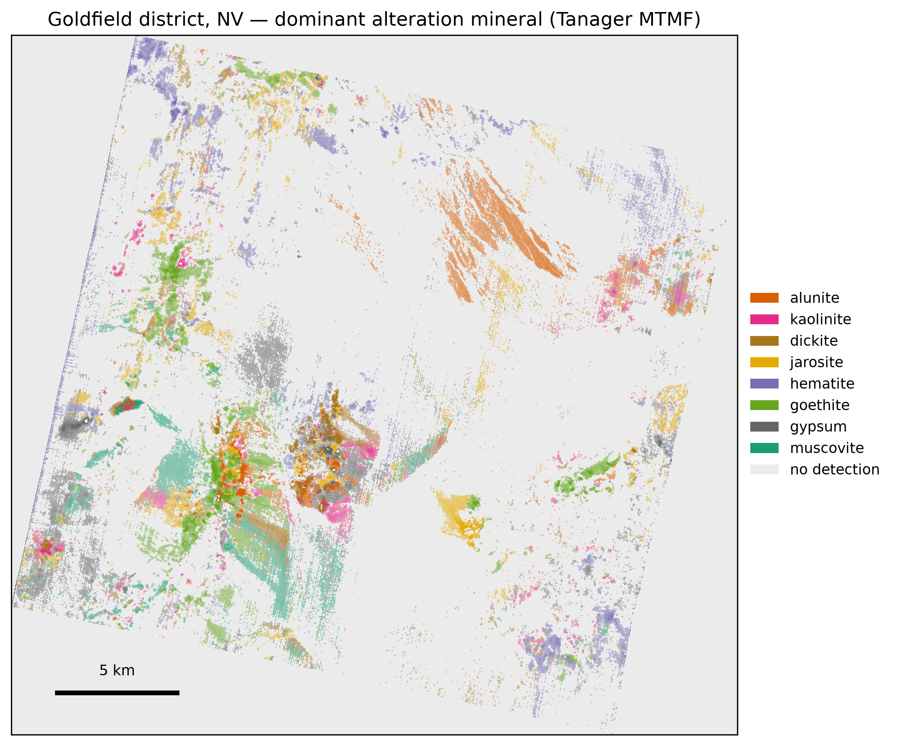
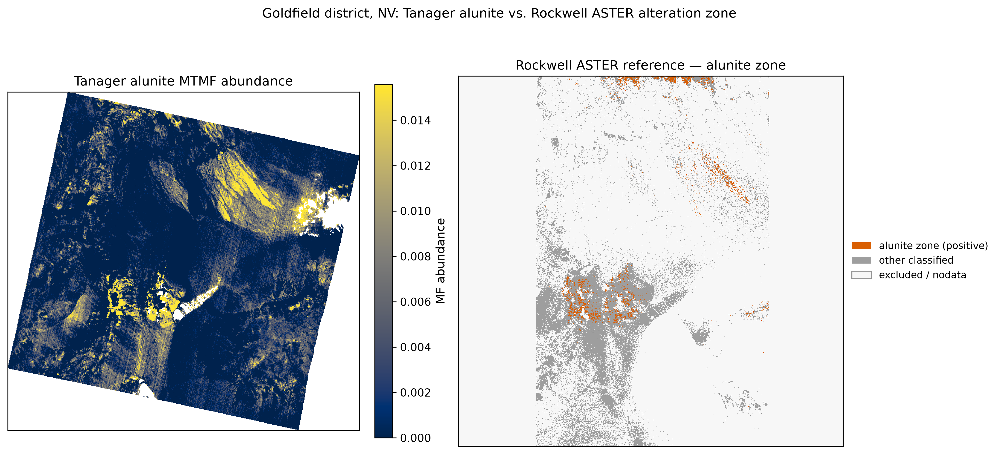
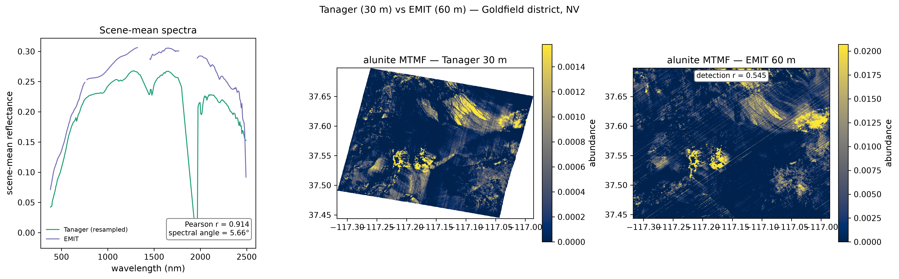
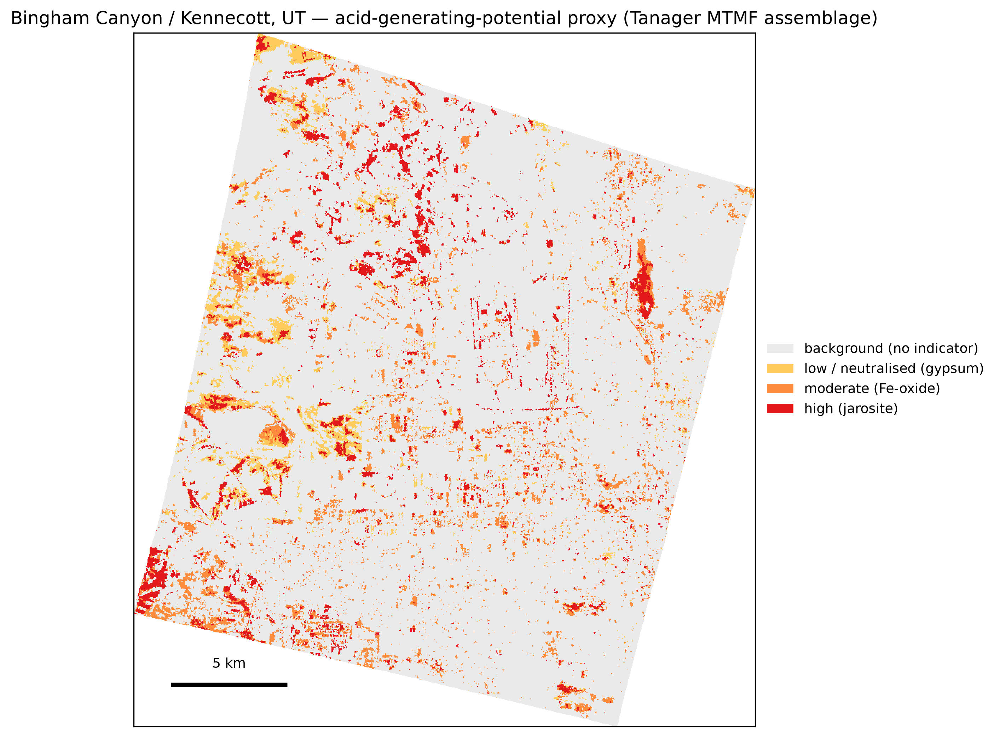

Can Tanager's contiguous 425-band VSWIR measurements resolve the alteration- and mine-waste minerals — alunite, kaolinite, jarosite, iron oxides, gypsum, white micas — at a specificity Sentinel-2 provably cannot, and what does that reveal about acid-mine-drainage hazard?
Tanager's contiguous visible-to-shortwave-infrared imaging resolves the alteration and mine-waste minerals that broadband sensors cannot separate. At two named US sites — Bingham Canyon and Goldfield — library-anchored mineral maps validate against an independent USGS map, agree with NASA's EMIT spectrometer, and yield a hedged acid-generating-potential layer that flags where mine waste is spectrally consistent with acid drainage. For the state geological surveys and federal agencies (USGS, BLM, EPA) that characterize critical-mineral potential and mine-waste hazard, this is a reproducible, open-source screening tool — and it makes the case that the open Tanager archive should grow over mining districts.
The work targets two iconic, well-characterized US districts. Goldfield, Nevada is a classic acid-sulfate hydrothermal system next to the USGS Cuprite spectral benchmark — the textbook VSWIR mineral-mapping case. Bingham Canyon / Kennecott, Utah is the world's largest open-pit copper-porphyry mine, with a massive tailings impoundment and a real acid-mine-drainage story.


Mineral identity is anchored to the USGS spectral library (splib07a): every endmember is a measured library spectrum, nothing is synthesized. The diagnostic absorptions — the 2200 nm Al-OH doublet, the 2265 nm jarosite feature, the 2340 nm gypsum-carbonate feature, and the visible-to-near-infrared ferric-iron bands — appear in both the library spectra and the mean spectrum of the scene pixels the model maps as each mineral.

The case for contiguous VSWIR is sharpest at the 2200 nm Al-OH doublet, which separates alunite (advanced-argillic) from kaolinite (argillic) — a distinction that matters for both ore characterization and acid generation. Degrading the Tanager spectra to Sentinel-2 bands collapses their separability from 5.1° to 2.6°, a 50% loss, because one broad Sentinel-2 band (B12) spans the whole doublet. The loss is specific to the shortwave infrared: the VNIR jarosite–goethite contrast survives degradation, the control showing the effect is the doublet itself, not coarse resampling.

A mixture-tuned matched filter (MTMF) estimates per-mineral abundance against each scene's own background, with an infeasibility score that suppresses spectrally implausible detections. Composited into a dominant-mineral map, Goldfield recovers the expected zoning: a sericite/phyllic core with an alunite advanced-argillic center and lineament at Cuprite, kaolinite and iron oxides around them.

Interactive: pan and zoom the Goldfield mineral classes over satellite imagery; toggle the overlay at top-right.
At Goldfield the maps were tested against the USGS ASTER alteration map of the district (Rockwell & Bonham 2017), an independent product with no shared calibration. The Tanager scores separate the published alteration zones: the Al-OH band depth and the gypsum-carbonate band depth each reach a rank-AUC of 0.78, alunite MTMF abundance 0.71, and muscovite (sericite) 0.69. The Fe-oxide and kaolinite layers separate less cleanly — the published categorical classes group these phases differently than the spectral library does — and that disagreement is reported, not tuned away.

Running the identical pipeline on an overlapping NASA EMIT scene — the only other spaceborne imaging spectrometer with comparable coverage — gives an external check with no shared code or acquisition. Scene-mean reflectance correlates at r = 0.91 over 240 shared bands, and all six target minerals correlate positively in MTMF detection, from jarosite (r = +0.59) to muscovite (+0.34). The agreement is moderate, as expected from the date offset and Tanager's finer grain: at 30 m, Tanager resolves about four times EMIT's ~60 m pixel density.

The secondary minerals that record acid generation are spectrally distinct. Jarosite is stable only in acidic, oxidizing, sulfate-rich conditions and is the diagnostic active-acid indicator; the iron oxyhydroxides are the higher-pH oxidation products; gypsum, absent the acidic iron phases, points to a buffered setting (Swayze et al. 2000). Each pixel is assigned an ordinal acid-generating-potential tier from the most acidic indicator present. At Bingham the high-potential pixels cluster around the pit and tailings ground.

Interactive: the acid-generating-potential tiers over the Bingham pit and tailings; toggle the overlay at top-right.
The whole pipeline is one installed command over Tanager's Open STAC imagery:
uv run tanager-minmap hero --site goldfield --output out/
A clean clone reproduces every figure and number above (see REPRODUCIBILITY.md); the seven-stage tanager-minmap CLI is released open-source, and the derivative maps are deposited with a citable DOI.